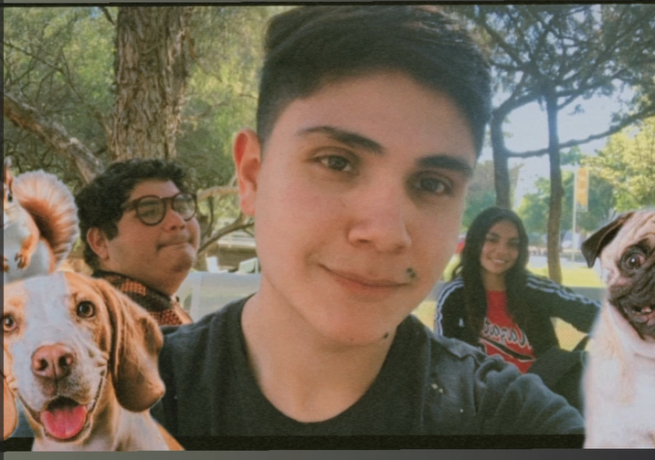

<div class="acerca">
    
    <div class="texto">
    <h1>¿Qué es un refugio de animales? Objetivos y funciones</h1>
    <p>Un refugio de animales es un albergue temporal para animales abandonados. Normalmente son perros y gatos, aunque algunos refugios recogen también animales más grandes abandonados en diversas circunstancias o los cada vez más numerosos animales exóticos. </p>   
    <P>Los responsables de un refugio de animales se encargan de recuperarles y cuidarles para que puedan encontrar un nuevo hogar donde les traten bien y puedan rehacer su vida. Se trata de organizaciones sin ánimo de lucro, como ONGs de bienestar animal o protectoras de animales, y se basan en el apoyo de donaciones, ayudas y el trabajo de voluntarios. Una idea similar son los santuarios de animales, con la diferencia de que en estos últimos los animales se quedan allí para el resto de su vida, ya que normalmente no son adoptables. </P>
    <p>Por tanto, los refugios animales no son centros de acogida, las perreras de toda la vida. Estas últimas son instituciones públicas que se rigen por las ordenanzas municipales y tienen que recoger a todos los animales que encuentran en la calle. Los refugios de animales también se diferencian de las perreras en que no sacrifican a los animales, salvo cuando es estrictamente necesario por una enfermedad muy grave. </p>

    <h1>Acerca de "Huellitas de Amor": Un Refugio para Animales en Busca de un Hogar</h1>
    <p>Huellitas de Amor es un refugio sin fines de lucro dedicado a brindar un hogar temporal a animales en situación de abandono o maltrato. Ubicado en el corazón de Aguascalientes, nuestro refugio abre sus puertas a perros, gatos y otros animales que han perdido su hogar o que nunca lo han tenido.</p>
    <p>Nuestra misión es proporcionar a estos animales el cuidado, el amor y la atención que necesitan para prosperar. Ofrecemos alimentación nutritiva, atención médica veterinaria, refugio seguro y un ambiente cálido y afectuoso donde puedan recuperarse de sus experiencias pasadas y prepararse para encontrar un hogar permanente lleno de amor.</p>
    <p>En Huellitas de Amor, creemos que cada animal merece una segunda oportunidad. Trabajamos arduamente para encontrar hogares responsables y amorosos para nuestros peludos amigos, donde puedan vivir una vida feliz y plena. Además de la adopción, también ofrecemos programas de voluntariado, sensibilización y educación para promover el bienestar animal en nuestra comunidad.</p>
    <p>Si estás buscando un compañero peludo para llenar tu vida de amor y alegría, te invitamos a visitar Huellitas de Amor. Contamos con una gran variedad de animales adorables que esperan ansiosamente encontrar un hogar para siempre. También puedes apoyar nuestra causa donando alimentos, materiales o tu valioso tiempo como voluntario.</p>
    <h2>Juntos podemos hacer una diferencia en la vida de estos animales que tanto lo necesitan.</h2>
    <p>Este es un proyecto desarrollado por <span style="color: rgb(0, 189, 28);">Judith Yahaira Ortega Ortega, Aaron Shachiel Garcia Muñoz y Daniel Omar Flores Ibarra</span></p>
    
</div>
</div>
  